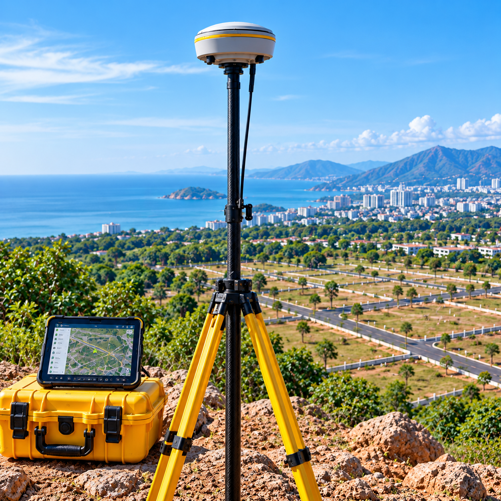
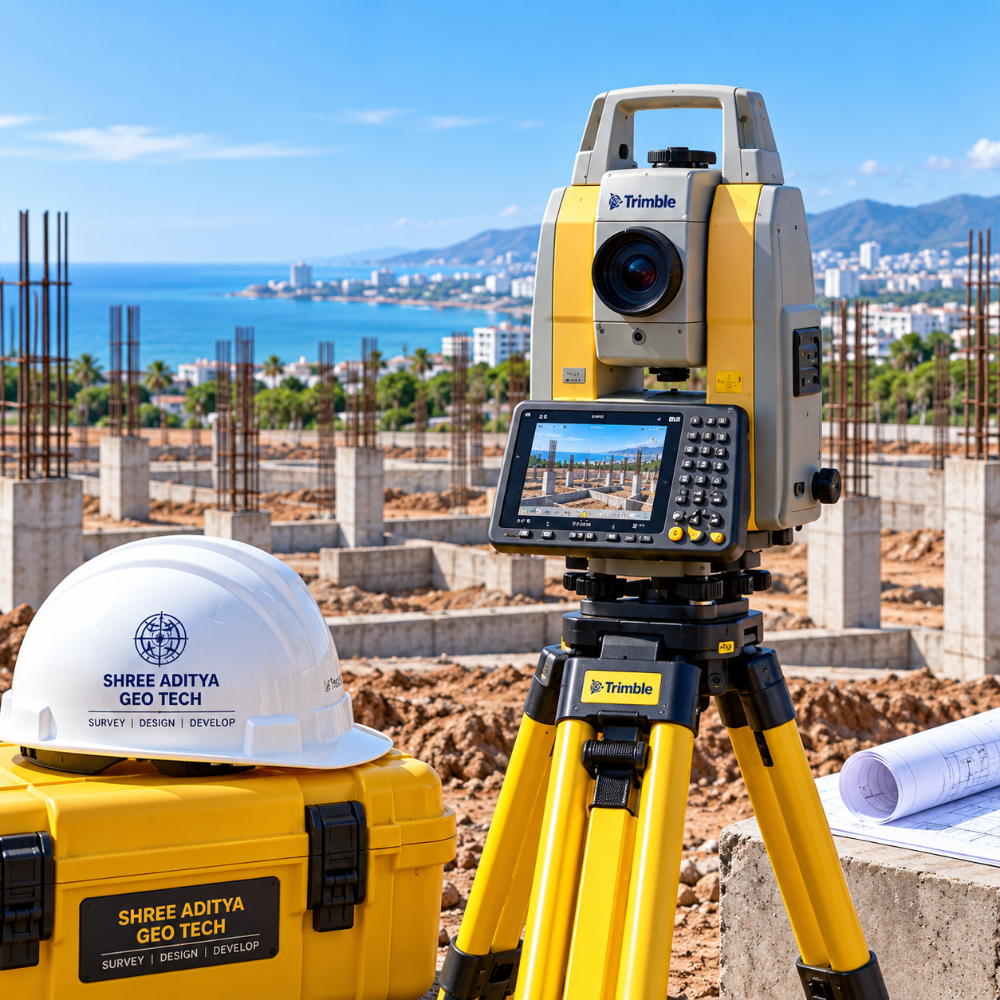
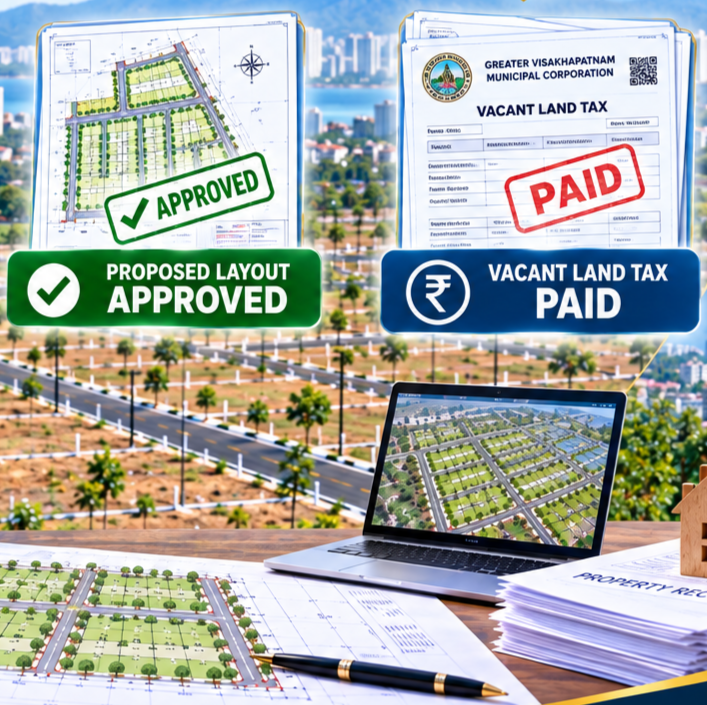
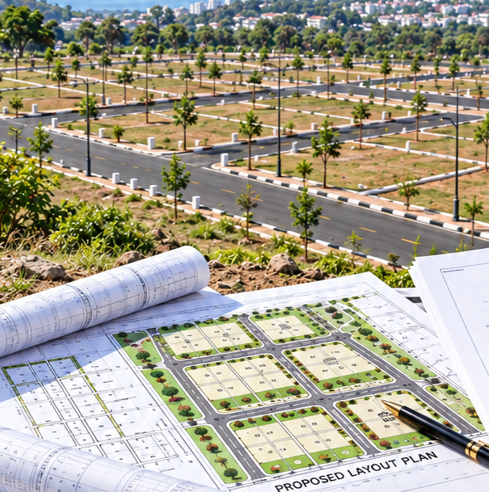
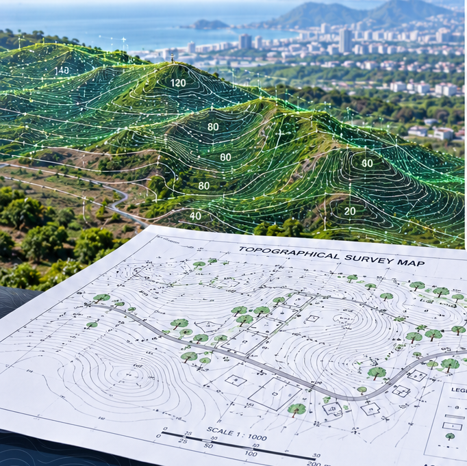
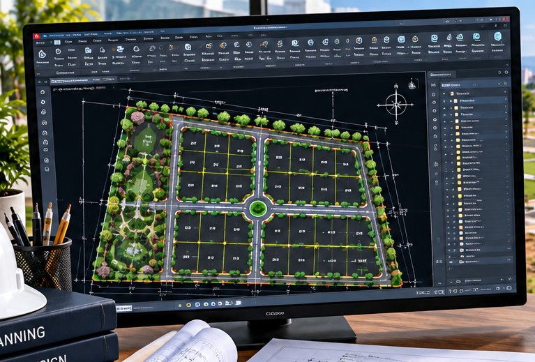
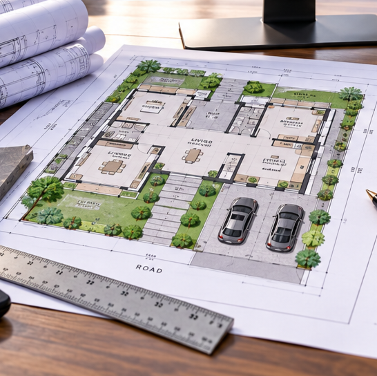
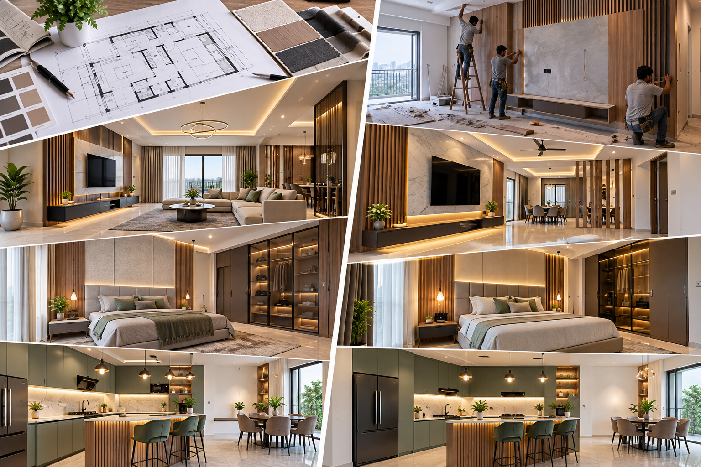

01
SURVEY
DGPS Surveying
High-precision positioning, coordinates and survey control for land and site development.
WHAT WE DO
Professional surveying and architecture services that connect precise site information with planning, approvals, visualization and practical design execution.
ONE COORDINATED APPROACH
We combine accurate surveying, architectural planning, approvals, visualization and technical documentation into a coordinated project workflow.
Four focused capabilities: Survey Services, Survey Instruments, Survey Software and Architecture Services.
01 / SURVEY SERVICES
Precision surveying, layout approvals and VLT service support for land development, planning and construction.

High-precision positioning, coordinates and survey control for land and site development.

Accurate angle, distance, coordinate and detail measurement for field survey work.
Aerial site capture, visual documentation and mapping support for project planning.

Layout approval support and Vacant Land Tax (VLT) service assistance with related documentation.

Planning support around applicable layout rules, development controls and site requirements.

Ground levels, contours, features and terrain information for planning and engineering.
Survey and documentation support for project information and related requirements.
Construction setting-out, alignment, reference and level markings on site.
02 / ARCHITECTURAL SERVICES
Planning, approvals, visualization, interiors, structural scheduling and construction support.
Clear plotting and site documentation for organized development and planning.

Landscape planning integrated with site circulation, open areas and plot use.

Functional floor plans developed around site dimensions, space needs and circulation.
Approval-support drawings and documentation prepared for applicable requirements.
3D facade and elevation modelling with presentation-ready architectural renders.

Interior planning, material direction, detailing and execution coordination.
Technical scheduling and coordinated documentation for structural components.
Coordinated construction support from structural works through finishing and execution.
04 / DIGITAL TOOLKIT
Our digital workflow connects drafting, 3D modelling, visualization, graphics, structural analysis and presentation.
ARCHITECTURE & ENGINEERING SOFTWARE
Tools supporting drafting, modelling, rendering, graphics and structural analysis.
SURVEY SOFTWARE
Digital tools supporting GIS, cadastral mapping, survey drafting and geospatial data workflows.
CONNECTED DIGITAL WORKFLOW
Field information can be developed into coordinated drawings, architectural studies, structural schedules and polished presentation outputs through a connected digital workflow.
OUR SERVICE FLOW
One coordinated approach connects ground reality with the drawing, the drawing with the design, and the design with practical execution.
Survey → Layout → Architecture → Approvals → Visualization → Documentation
NEXT STEP
Tell us what you are planning. We can help identify the right combination of surveying, planning, architecture, approvals and visualization services for your project.